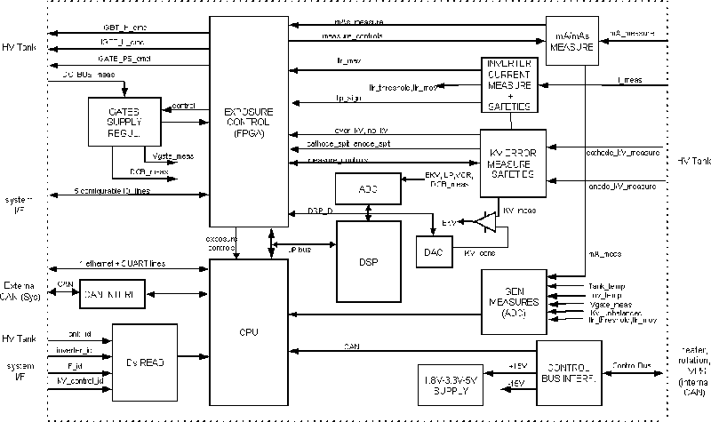
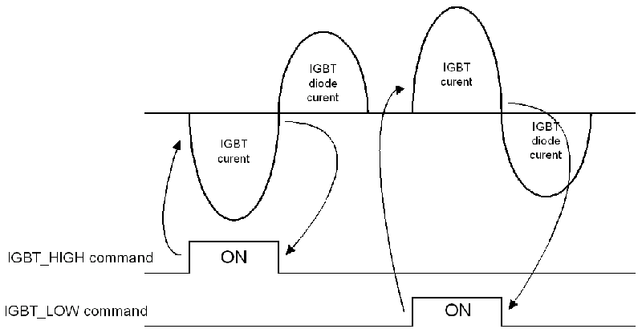

Operating Documentation
Direction 5224328-800, Rev# 5
Dir 5224328-800 LightSpeed 5.X HP60 Limited Access Service
Methods - Adv.
Operating Documentation |
The PPC kV control board function is the main control of the generator.
Its main functions are the following:
CPU that runs the generator software:
console and/or system communication
exposure sequencing (rotation, heater, exposure control)
mA regulation
tube and generator thermal protection
generator configuration management
tube calibrations
generator diagnostics (application background diagnostics and service diagnostics)
standard interface to system interface
Control bus interface
exposure control
HV power inverter control
IGBT gate drive supply control
HV chain measures and safeties (kV, mA, mAs, inverter currents, inverter gate supply, DC bus)
For information on the kV function, please refer to kV Function (RT) or kV Function (LS16, Ultra & Plus), as is appropriate for your system.
For information on the mA function, please refer to mA Function (RT) or mA Function (LS16, Ultra & Plus), as is appropriate for your system.
Illustration 1: JEDI Generator / PPC kV Control

| NOTE: | For a larger version of the above illustration, click on the pdf icon below: |
Media File 1: JEDI Generator / PPC kV Control

CPU is a Power PC microcontroller based CPU running at 50MHz .
Program memory is a 2Mbytes flash memory which allows the software to be downloaded through the system.
Data memory contains a 256Kbytes RAM and 32Kbytes battery backed-up RAM used to store the configuration/calibration/errorlog data. This memory also includes a clock used mainly for thermal algorithm calculation.
The generator software is based on VxWorks operating system and divided into several tasks and layers:
communication tasks control the various communication paths provided by the CPU
application tasks handle the exposure state machine
thermal management task
device controller tasks which identify and then drive the kV control, mA control, heater and rotation functions
Calibration and diagnostic functions are also part of the generator software
The PPC kV control board provides a standard interface on which various system interfaces can be plugged depending on the system configuration.
This “standard” interface provides:
a CAN communication line
5 UART lines
5 configurable IO lines
4 system interface identifier lines
kV control is connected to the generator internal communication bus:
CAN communication line used to drive heater and rotation functions
reset line (from kV control to other functions)
mains_drop (from lvps board to signal without delay a drop on the main supply)
ctrl_to_grid (from kV control to grid for pulsed modes in vascular)
speed_cons_to_rotor (spare)
+15V (used to create locally 5V supply)
-15V
CAN is a network developed and standardized by the automotive industry.
Its main purpose is to bring short command messages in hostile environments over few meters up to hundreds of meters with a guaranteed latency and without any information loss.
Defined for small systems, it does not require large amounts of software to encode and decode the messages.
The network hardware is based on a differential line (2 wires) driven at each node by a CAN driver (ISO/DIS 11898 standard).
The length of the network defines the maximum network speed: 1Mbit/s max up to 30m length, 500Kb/s up to 100m.
The messages have a fixed length. Their structure is the following:
an identifier field which defines at the same time the command number and the priority of the command (smaller the command number is, higher is the priority)
8 bytes of data max
checksum of the message
The CAN protocol ensures that:
the highest priority message is sent first
if a message is corrupted, it is resent automatically
if more than 8 bytes of data must be transmitted, data is divided into packets of 8 bytes and several messages are generated consecutively
Exposure control master is the CPU core:
Once the system connected to the generator is known, the CPU downloads the exposure control configuration stored in a FPGA and a DSP.
Then, the CPU manages the slow functions while the FPGA and DSP manage the hard real-time functions:
FPGA/DSP:
handles the system/generator IO lines (including exposure command lines, brightness...)
triggers/cuts the exposure
handles the HV power inverter safeties signals (DSP)
handles Xray On signal
counts the mAs (N/A for CT applications)
generates the 1KHz microprocessor main interrupt
CPU:
updates the exposure state machine based on the signals sent by the FPGA
generates the exposure enable command to the FPGA once everything is ready for the exposure
calculates and applies kV,mA,exposure time, mAs
counts the exposure time
regulates mA each 1ms
counts the brightness for AEC (N/A for CT applications)
regulates brightness for ABC in fluoroscopy (N/A for CT applications)
handles heater and rotation errors
manages the event and error log
This function is controlled by the FPGA and DSP.
The processors handle the HV power inverter state machine. This state machine goes into its active states when exposure control function triggers the exposure. Then the state machine successively drives each IGBT gate.
The delay applied between two consecutive IGBT "on" commands is calculated inside the DSP.
This is the minimum time of the following two:
the parallel resonance time which represents the max delay not to go over (the inverter must not be driven below the parallel resonance frequency)
the time calculated by the kV regulation
This second time is the result of the kV regulation loop whose role is to make the measured kV equal to the kV demand:
kV measure is subtracted to kV demand to create error_kV (analog or 360 kV control board and digital for the PPC board)
error_kV is divided in two parallel chains made of a kV error peak detection followed by a analog to digital conversion (analog)
the digital error then feeds a digital PI (proportional Integral) regulator which calculates the delay to apply before triggering the next IGBT (FPGA) for the 360 kV control (computed by the DSP in case of PPC board)
Each IGBT "off" command is triggered by the 0 Amps crossing of the serial resonant current.
Illustration 2: HV Power Inverter Serial Resonant Current

In case of a tube spit, the state machine goes to the "off" state, stays 100us inside it and automatically restarts if the maximum number of tube spits is not reached. This time can be longer in the case of RAD or RF products (4 ms, for example)
At the same time, the main software counts the number of spits and informs the system with a process depending upon the application.
IGBT commands from the FPGA then go through drivers to the inverter. The drivers can be disabled by a mains drop or an incorrect gate supply.
The IGBTs gate drive supply is controlled synchronously with the inverter state machine:
gate supply voltage is read and compared to a reference
each two IGBT command, the gate supply IGBT is commanded with a duration proportional to the gate voltage error
between two exposures, with the inverter not running, the gate supply is regulated by at a fixed (8KHz) frequency. Constant gate supply voltage is ensured by regulating the gate supply command pulse width.
HV chain is protected by fast and slow safeties.
Fast safeties are implemented in analog form and cut the HV power inverter state machine in case of error:
over kV
no kV
kV regulation error (at the 7th error in the exposure)
cathode spit (after the max number of tube spits allowed for the application/tube)
max resonant current
gate supply ok
Slow safeties are based on measures made by the microcontroller.
The following signals are measured every 1ms:
kV measure
kV unbalance
kV demand
mA measure
HV tank temperature
gate supply voltage
DC Bus voltage
These measurements provide a second way to detect a fault condition in the HV chain and put the generator in a safe state.